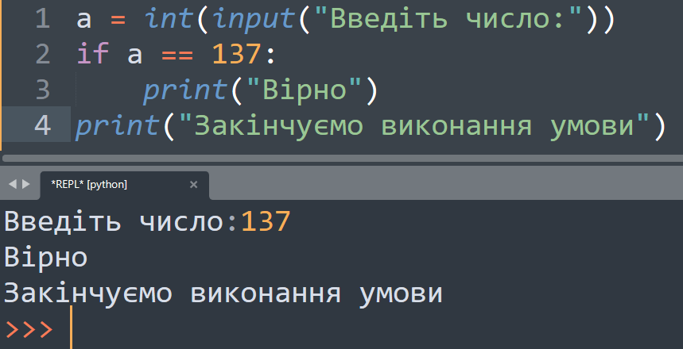
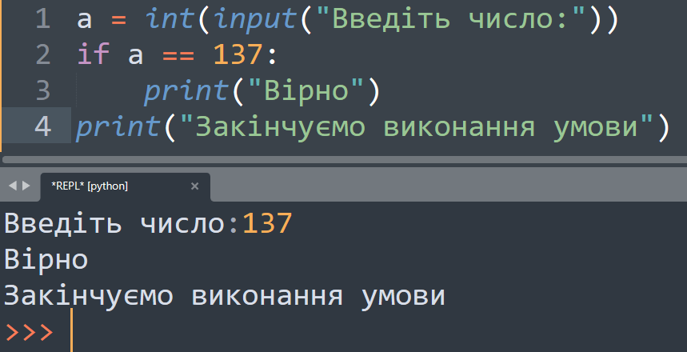
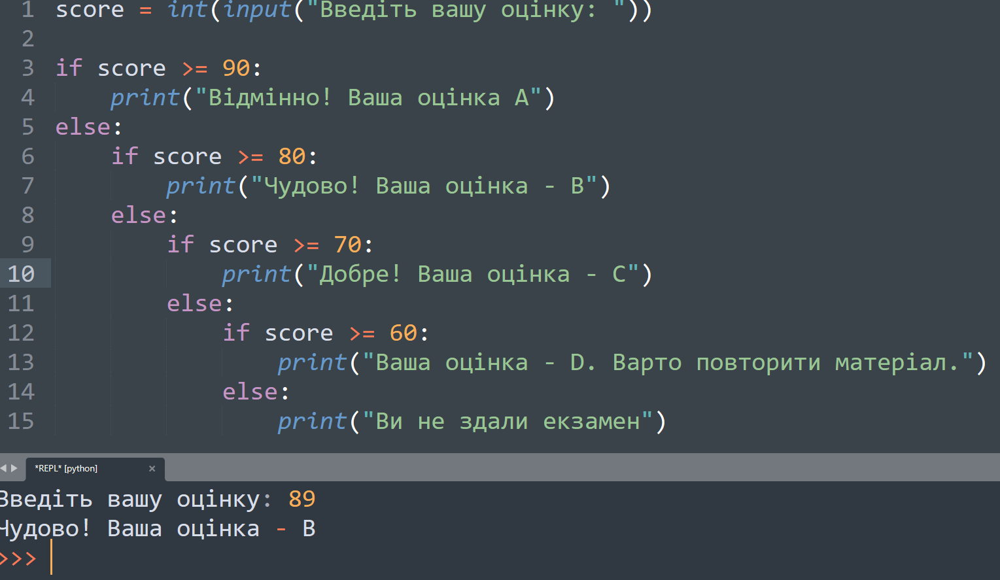
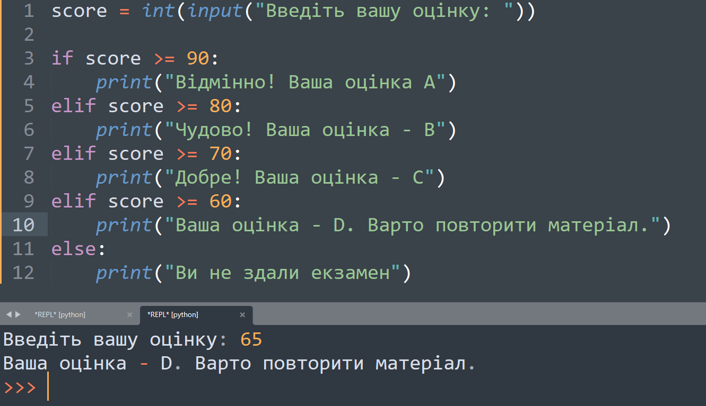

Умовні оператори
<- менше. Перевіряє чи є значення меншим.
>- більше. Перевіряє чи є значення більшим.
>=- більше рівне. Перевіряє чи є значення більше або рівне.
<=- менше або рівне. Перевіряє чи є значення меншим або рівним.
==- порівняння. Використовується якщо потрібно порівняти обидва значення.
Оператор умови if
Інколи нам потрібно виконати різні дії, залежно від умов, для цього використаємо оператор умови if(якщо)
Синтаксис оператора такий:
 

Оператор умови else
Якщо нам потрібно написати дію , що відбулася якщо умова не виконалася ми використовуємо else:
Синтаксис оператора такий:
Оператор if-else всередині умови else
Синтаксис розглянемо на прикладі:
Програма визначення оцінки студента з урахуванням введених балів.
Оператор if-elif-else
Оператор if-else - це альтернативне уявлення оператора if-else,
яке дозволяє перевіряти кілька умов замість того, щоб писати вкладені if-else.
Синтаксис розглянемо на тому ж прикладі, що і оператор if-else прикладі:
